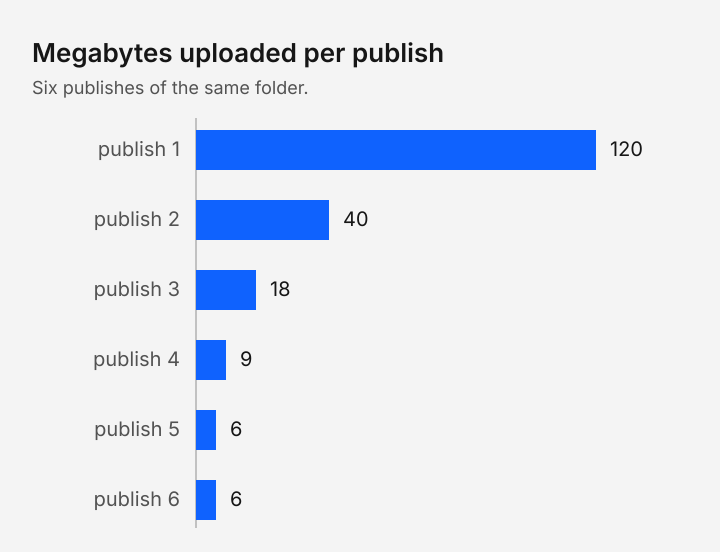

The problem
A link sent in a calendar invite outlives the slide it points at. Most publishing tools keep a mutable page behind a stable address, so every edit silently rewrites what a reader will see next week, and a citation to last year's talk opens this year's version of it.
rshow takes the other side. A publish writes a numbered version, a version never changes, and the address that follows the newest version is a separate promise from the address that holds one.
The claim under test is narrow: after the first publish, the bytes a republish sends track the bytes that changed, not the size of the folder.
What a publish does
rshow publishes a folder. It hashes every file, writes a manifest, uploads what the host does not already hold and records the version last, so a publish that fails leaves the previous version in place.
- Read the folder, and run the build command if
rshow.jsonnames one. - Hash every file and write the manifest.
- Upload the files whose hash the host lacks.
- Write the version row, then move the live link.
The record is the only mutable object in the system: one row per slug, holding the title, the owner, the mode, the newest version number and the pin if there is one. Content addressing does the rest, because a file is stored under the hash of its bytes, so the same picture in two decks is stored once.
What a republish sends

The first publish sends the whole folder, because the store is empty. Every later one sends the files whose hash the host lacks, which is the same rule the cache header follows: a versioned path never changes, so it may be kept for a year, while the live link is rechecked on every use.
Key findings
- A version path never changes, so a citation to it stays true.
- A republish sends the files that changed, not the folder.
- An immutable path may be cached for a year; the live link is rechecked every time.
- A pin holds one version in place while the folder moves behind it.
Where it holds
A version that never changes is also a version that is hard to withdraw. A link that has reached one reader can be deleted from the host but not from the copy that reader kept.
The record assumes one writer at a time. Two people publishing the same slug in the same second resolve to one version, and the loser publishes again; we take that over a lock, because the case is rare and the recovery is cheap.
There is no per-link grant and no expiring URL. A closed artifact is closed by the identity provider and the share list, not by a token in the address.
What comes next
The experiment is one folder, edited as a person edits a talk: publish after every edit, record the bytes the upload sent, and repeat with the cache cold and warm. A cold cache measures the host; a warm one measures the reader.
The chart above is the shape we expect and says nothing about the size of a real folder. A result we would publish is the same chart with the folder, the host and the date named beside it.